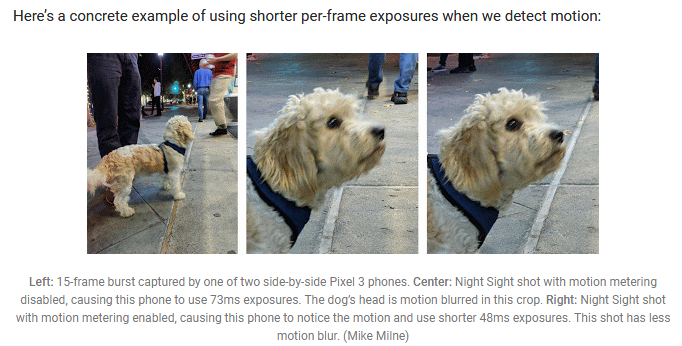
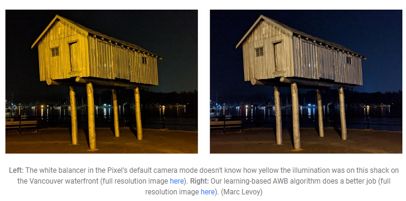

读google HDR+ spaper
1.关于ZSL的Flow 为什么谷歌相机和华为的能秒拍？
framewrok层和APP到底做了什么看一下代码
2.谷歌在3lux以上用HDR+ 3lux到0.3lux用Night Sight
Smartphone cameras that take a single picture begin to struggle at 30 lux. Phones that capture and merge several pictures (as HDR+ does) can do well down to 3 lux, but in dimmer scenes don’t perform well (more on that below), relying on using their flash. With Night Sight, our goal was to improve picture-taking in the regime between 3 lux and 0.3 lux, using a smartphone, a single shutter press, and no LED flash. To make this feature work well includes several key elements, the most important of which is to capture more photons.
4.HDR+是用ZSL的buffer 结合HDR+的论文看，HDR+采用的自己的一套曝光策略：
HDR+ limits exposures to at most 66ms no matter how dim the scene is, allowing our viewfinder to keep up a display rate of at least 15 frames per second.
When you press the shutter button, the camera sends the most recent 9 or 15 frames to our HDR+ or Super Res Zoom software.
5.谷歌怎么做防抖 用光流做运动估计
To combat motion blur that OIS can’t fix, the Pixel 3’s default picture-taking mode uses “motion metering”, which consists of using optical flow to measure recent scene motion and choosing an exposure time that minimizes this blur

看起来效果还很好 (光流法)
6.Night Sight per-frame max 333ms
也有手持跟脚架的区分
If the camera is being stabilized (held against a wall, or using a tripod, for example), the exposure of each frame is increased to as much as one second.
Night Sight captures 15 frames of 1/15 second (or less) each, or 6 frames of 1 second each, or anything in between
6.Alignment and Merging
Pixel1和Pixel2上用的是HDR+，Pixel3上用的是super res zoom
Night Sight uses a similar principle, although at full sensor resolution and not in real time. On Pixel 1 and 2 we use HDR+’s merging algorithm, modified and re-tuned to strengthen its ability to detect and reject misaligned pieces of frames, even in very noisy scenes. On Pixel 3 we use Super Res Zoom, similarly re-tuned, whether you zoom or not. While the latter was developed for super-resolution, it also works to reduce noise, since it averages multiple images together. Super Res Zoom produces better results for some nighttime scenes than HDR+, but it requires the faster processor of the Pixel 3.
7. Other challenges
AWB in low light
The AWB algorithm used in non-Night Sight modes is good, but in very dim or strongly colored lighting (think sodium vapor lamps), it’s hard to decide what color the illumination is.
To solve these problems, we developed a learning-based AWB algorithm, trained to discriminate between a well-white-balanced image and a poorly balanced one. When a captured image is poorly balanced, the algorithm can suggest how to shift its colors to make the illumination appear more neutral. Training this algorithm required photographing a diversity of scenes using Pixel phones, then hand-correcting their white balance while looking at the photo on a color-calibrated monitor.
